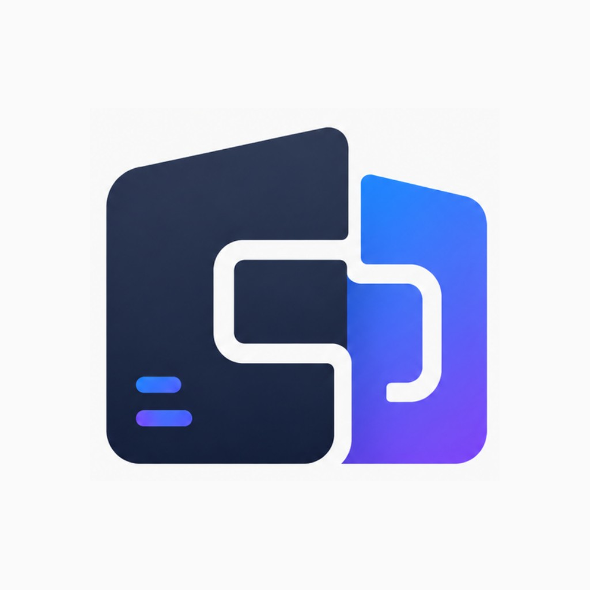

v0.8 • identidade oficial
Companion Deck
Central gamer offline-first com identidade oficial, biblioteca local, Player em tela cheia, sidebar oculta, launcher externo como fallback e arquitetura preparada para motores/core futuros.
Central local
Meus Jogos
Nenhum jogo salvo ainda.
Toque em “Adicionar jogo”, escolha o arquivo no dispositivo e salve o card. A ROM/ISO não é copiada para dentro do app.
Fluxo principal
Player interno
A tela de jogo agora segue o fluxo real.
Ao tocar em Jogar, o Companion Deck abre uma tela cheia limpa. Os controles desenhados foram removidos: quando o motor/core real entrar, os controles do próprio motor serão encaixados sobre a tela. A saída/configuração fica na sidebar oculta.
Opção secundária
Launcher externo
Emulador externo é fallback, não o fluxo principal.
Use esta área quando o motor interno do Companion Deck ainda não existir para aquele console, ou quando o jogador preferir abrir em um app compatível já instalado.
Organização por sistema
Consoles
Consulta e importação futura
Code Deck
Nesta base v0.7, os códigos continuam como placeholders. A aplicação real virá em fases futuras,
sempre usando formatos compatíveis e sem injeção.
Transparência
Motores & Fontes oficiais
PPSSPP
Referência futura para jogos de portátil PSP. Usar apenas fontes oficiais e respeitar licença.
Dolphin
Referência futura para Cube/Wii. Requer aparelho forte e integração cuidadosa.
RetroArch / Libretro
Referência de arquitetura com frontend e cores. Útil para pensar modularidade.
Uso responsável
Avisos do projeto
O Companion Deck não fornece jogos, ROMs, ISOs ou BIOS. O usuário deve adicionar apenas arquivos que possui legalmente. As capas são adicionadas manualmente pelo jogador e ficam salvas apenas como referência local. O Code Deck é voltado a jogos offline, treino e formatos compatíveis. O app não injeta código, não altera memória de outros aplicativos, não burla anti-cheat e não oferece suporte a cheats online.